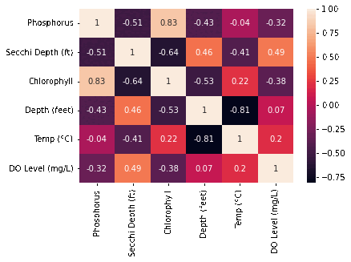
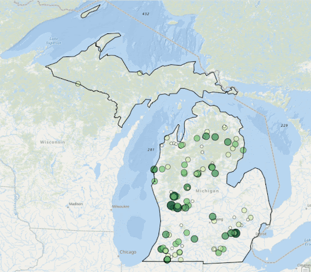
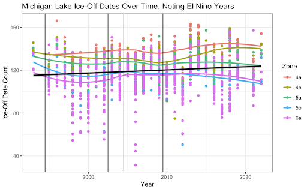
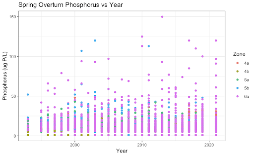
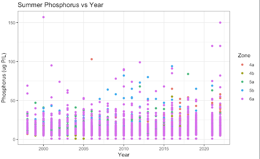
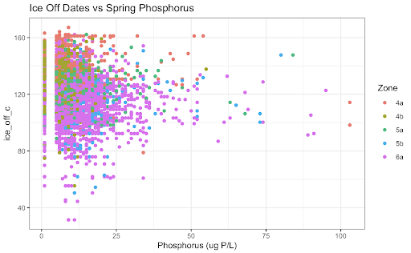

Project Leads: Adam Kuplicki, Mya Strayer
Past Contributions: Daniel Schneider, Sydney Deal
Motivation:
We wanted to work with Michigan Clean Water Corps because they are a part of EGLE (Michigan Department of Environment, Great Lakes, and Energy) and are a volunteer-run organization monitoring of Michigan’s freshwater resources. They disseminate water quality data from streams and lakes across the state and make the data available to other organizations.
Methods:
We pulled data from the MiCorps website includes the lake name, the datetime it was sampled, along with variables of interest such as: Phosphorus, Chlorophyll and dissolved oxygen levels; secchi depth, and the lake’s temperature at varying depths. After cleaning and merging all of the datasets, we created a correlation matrix over time Unsurprisingly, variables such as secchi depth and phosphorus and depth and temperature are correlated Interestingly, DO Levels and Phosphorus become increasingly negatively correlated. Majority of our time was spent on cleaning that messy, messy data so we could actually use it. We changed the datetime to just being the year, and then created aggregate sums for each of the variables of interest (in ArcGIS plots).
Findings:
Unsurprisingly, variables such as secchi depth and phosphorus and depth and temperature are correlated. Interestingly, DO Levels and Phosphorus become increasingly negatively correlated. We also discovered that there are increasing Ice-Off Dates which means that the last data of ice on the lake is increasing. The implications for this are longer winters, impacts on bird migrations since they come there when it’s warm, but there’s no food due to the ice, and novel weather patterns as a product of climate change. A potential cause for this we looked into was phosphorous, but the data does not look promising.
Data Visualizations:
-

Correlation Heatmap
-

ArcGIS Visualiation of Clorophyll Levels from 2003-2022
-

Increasing Ice-Off Dates
-

Phosphorous as a Cause (Fig 1)
-

Phosphorous as a Cause (Fig 2)
-

Phosphorous as a Cause (Fig 3)